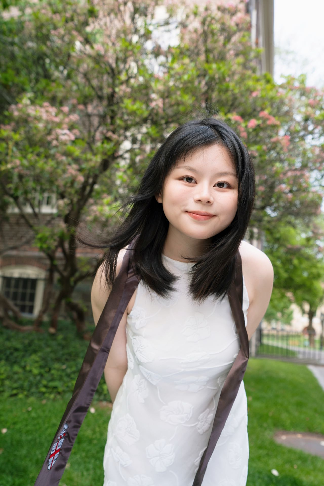

PhD student · Simon Fraser University
I am a first-year PhD student in the School of Computing Science at Simon Fraser University, where I am a member of the GrUVi and 3DLG labs, co-advised by Prof. Manolis Savva and Prof. Ali Mahdavi-Amiri. My research interests lie in computer graphics and 3D computer vision, with a focus on 3D content creation.
Before SFU, I was a research assistant at Brown University with Prof. Daniel Ritchie, working on lifting 2D design sketches of CAD models to 3D in collaboration with Dr. Adrien Bousseau at Inria. I received my M.S. in Computer Science from Brown and my B.S. in Computer Science, with a minor in Mathematics, from Wenzhou-Kean University.